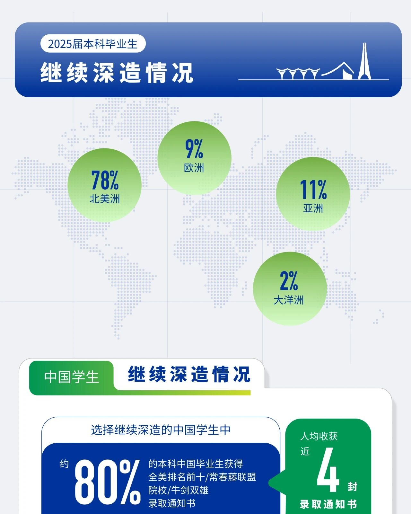
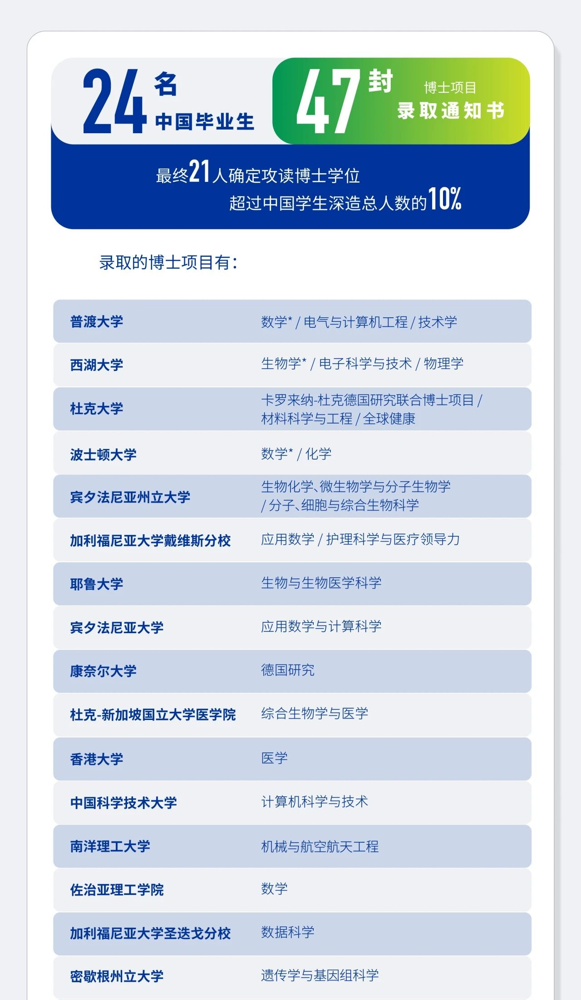

Audience
Parents of prospective students and students considering Duke Kunshan University may use graduate outcomes as an indicator of academic strength and future opportunities.
DKU Class of 2025
Duke Kunshan University, Class of 2025
The original report presents destination shares, selected schools, and reported programs for the Class of 2025.
Source: Duke Kunshan University Office of Career Services, Undergraduate Graduate Outcomes Report.


Parents of prospective students and students considering Duke Kunshan University may use graduate outcomes as an indicator of academic strength and future opportunities.
The report communicates and supports recruitment: it highlights graduate outcomes, shows postgraduate destinations, and presents DKU as an attractive option for prospective students and families.
The redesign responds to those weaknesses through three coordinated changes.
Every view updates together.
Loading the supplied CSV files…
Reported achievement context
These original-report outcomes remain visible alongside the redesigned destination views.
Values are reported by DKU's original report; they are shown separately from the supplied CSV-based visualizations.
1. Overall destination shares
Percentages use students in this group who chose further study as the denominator.
2. Partial school list
Filter by the report's original region grouping. The map locates countries or areas; the ranking makes school and program information immediately visible.
Bubble size shows listed students. Click a bubble to narrow the school ranking.
Sorted by the number of listed students. A school is selected automatically.